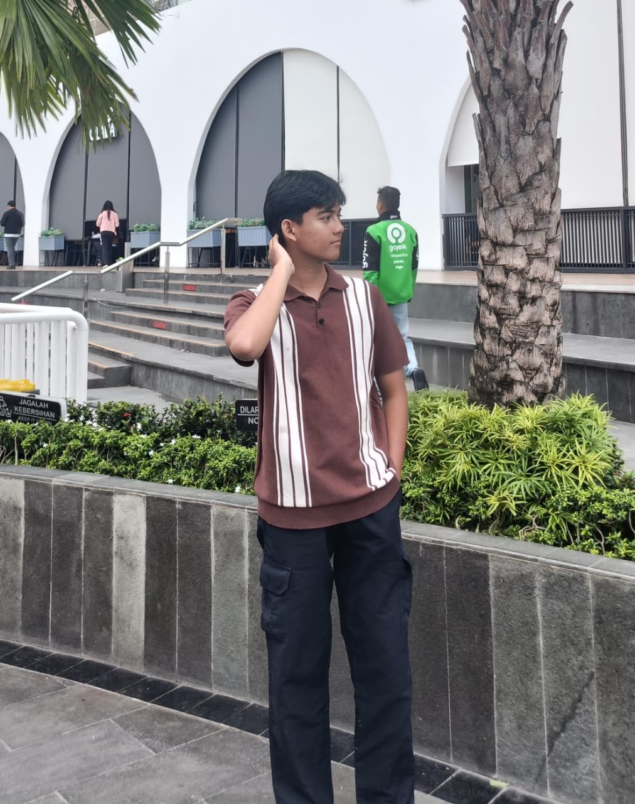

Jenis-Jenis Bencana
& Proses Terjadinya
Uji dan tingkatkan pemahamanmu tentang proses ilmiah terjadinya bencana alam geologi, hidrometeorologi, hingga bencana terestrial. Jawab soal, susun tahapan kronologis, dan dapatkan gelar Mitigasi Bencana!

Gempa, Tsunami, Gunung Meletus, Longsor.
Banjir Bandang, Puting Beliung, Kekeringan.
Kebakaran Hutan, Gelombang Panas, Dll.
Lengkapi nama, kelas, dan asal sekolah sebelum memulai.
Pertanyaan muncul di sini?
Gunakan tombol Panah (▲/▼) untuk mengurutkan tahapan kronologis dari awal ke akhir:
Pasangkan setiap pemicu/penyebab utama di kiri dengan jenis bencana yang tepat di kanan:
Gempa bumi terasa kuat saat kamu sedang berada di dalam kelas. Barang-barang mulai bergoyang dan beberapa teman panik. Apa tindakan tercepat yang paling tepat?
Tas siaga memiliki 4 slot. Pilih tepat barang-barang yang paling penting untuk keselamatan saat evakuasi.
Hasil Evaluasi Pemahaman
Selamat! Kamu telah menyelesaikan seluruh level edukasi mengenai jenis-jenis bencana dan proses ilmiah terjadinya.
Sertifikat Kelulusan
Peserta Tanggap Bencana
Diberikan kepada
Nama Peserta
Kelas - • Sekolah
Telah menyelesaikan kuis edukasi Jenis-Jenis Bencana dan Proses Terjadinya dengan pemahaman tentang kesiapsiagaan dan mitigasi bencana.

Informasi Pembuat
Raziq Al Kahfi
NIM 25045077 • Prodi Pendidikan Geografi
Universitas Negeri Padang (UNP)